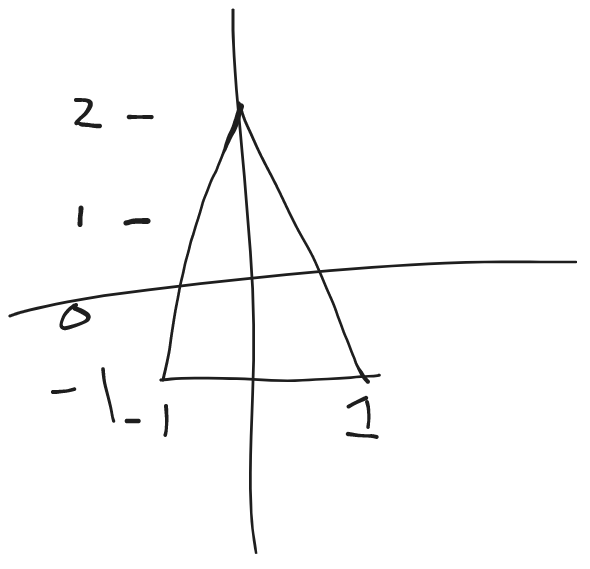

Creating a boid
our next step is to draw the boid on the screen.
our first step is drawing anything on the screen. our new "spawn_boids_system" with spawn an entity using a "ColorMesh2dBundle".
A bundle is nothing but a collection of components commonly used together. You can even build you own bundles (we wont be doing that). This bundle has all the components we need to get a shape on the screen.
use bevy::prelude::*; fn main() { App::new() .add_plugins(DefaultPlugins) .add_startup_system(setup_camera) .add_startup_system(spawn_boids_system) .run(); } fn setup_camera( mut commands: Commands ) { commands.spawn(Camera2dBundle::default()); } fn spawn_boids_system( mut commands: Commands, mut meshes: ResMut<Assets<Mesh>>, mut materials: ResMut<Assets<ColorMaterial>>, ){ commands.spawn( ColorMesh2dBundle { material: materials.add(ColorMaterial::from(Color::PURPLE)), mesh: meshes.add(Mesh::from(shape::Quad::default())).into(), transform: Transform { scale: Vec3::splat(100.0), ..default() }, ..default() }, ); }
for bevy to draw on the screen it needs to know:
- the material: what color to draw
- what mesh to use: what shape to draw
- and the transform: where to draw and in what rotation/scale.
"ColorMesh2dBundle" has other properties that we do not care about. we can use
..defaultto fill in the default values for the remaining feilds.
after running this with
cargo run
you should see a purple square show up on screen.
we build the square using Mesh::from(shape::Quad::default()). sadly, there is no shape for isosceles triangle that i am aware of so we will have to build our own. It is a good idea to build out mesh is a separate function:
#![allow(unused)] fn main() { ... fn create_triagle_mesh() -> Mesh { //build mesh } fn spawn_boids_system( mut commands: Commands, mut meshes: ResMut<Assets<Mesh>>, mut materials: ResMut<Assets<ColorMaterial>>, ){ commands.spawn( ColorMesh2dBundle { material: materials.add(ColorMaterial::from(Color::PURPLE)), mesh: meshes.add(create_triagle_mesh()).into(), transform: Transform { scale: Vec3::splat(100.0), ..default() }, ..default() }, ); } }
^we changed the code inside meshes.add(**)
#![allow(unused)] fn main() { ... fn create_triagle_mesh() -> Mesh { let mut mesh = Mesh::new(PrimitiveTopology::TriangleList); mesh.insert_attribute(Mesh::ATTRIBUTE_POSITION, vec![ [0.0, 0.0, 0.0], [0.0, 0.0, 0.0], [0.0, 0.0, 0.0], ]); mesh.set_indices(Some(Indices::U32(vec![0,1,2]))); mesh } ... }
in order to do this we need to import a few things from bevy at the top of our program:
#![allow(unused)] fn main() { use bevy::prelude::*; use bevy::render::{render_resource::PrimitiveTopology, mesh::Indices}; ... }
I left the coords for the mesh above as 0's. we will fill them in now 
as you can see we have vertices at [0,2], [-1, -1], and [1, -1]. although we are working in 2d, all meshes in bevy are 3d. In this case all our z coords(toward and away from camera ) will be left as 0.
#![allow(unused)] fn main() { ... mesh.insert_attribute(Mesh::ATTRIBUTE_POSITION, vec![ [0.0, 2.0, 0.0], [-1.0, -1.0, 0.0], [1.0, -1.0, 0.0], ]); ... }
the reason that we need to add a decimal of 0 is to tell the compiler that these are floating point numbers and not integers. Bevy always uses f32.
the last component we need to complete our boid is a velocity vector. we will define a new component like this:
#![allow(unused)] fn main() { ... #[derive(Component)] struct Velocity(Vec3); ... }
while we only need a Vec2 for because we are only using 2 dimensions, using a Vec3 will allow us to do easier arithmetic with the translation of boids (which have to use Vec3).
then when we spawn the boid we need to add the velocity component:
#![allow(unused)] fn main() { ... #[derive(Component)] struct Velocity(Vec3); fn spawn_boids_system( mut commands: Commands, mut meshes: ResMut<Assets<Mesh>>, mut materials: ResMut<Assets<ColorMaterial>>, ){ commands.spawn(( ColorMesh2dBundle { material: materials.add(ColorMaterial::from(Color::PURPLE)), mesh: meshes.add(create_triagle_mesh()).into(), transform: Transform { scale: Vec3::splat(100.0), ..default() }, ..default() }, Velocity(Vec3{x: 0.0, y: 10.0, z: 0.0}) )); } }
^the "spawn" command only take one argument so we need to wrap our 'ColorMesh2dBundle' and 'Velocity' in a new set of parenthesis: commands.spawn((...))
our boids now has no velocity in the x direction, and 10.0 in the y. Once we add movement, it should move up by 10 units per frame.
here is our program so far:
use bevy::prelude::*; use bevy::render::{render_resource::PrimitiveTopology, mesh::Indices}; fn main() { App::new() .add_plugins(DefaultPlugins) .add_startup_system(setup_camera) .add_startup_system(spawn_boids_system) .run(); } fn setup_camera( mut commands: Commands ) { commands.spawn(Camera2dBundle::default()); } fn create_triagle_mesh() -> Mesh { let mut mesh = Mesh::new(PrimitiveTopology::TriangleList); mesh.insert_attribute(Mesh::ATTRIBUTE_POSITION, vec![ [0.0, 2.0, 0.0], [-1.0, -1.0, 0.0], [1.0, -1.0, 0.0], ]); mesh.set_indices(Some(Indices::U32(vec![0,1,2]))); mesh } #[derive(Component)] struct Velocity(Vec3); fn spawn_boids_system( mut commands: Commands, mut meshes: ResMut<Assets<Mesh>>, mut materials: ResMut<Assets<ColorMaterial>>, ){ commands.spawn(( ColorMesh2dBundle { material: materials.add(ColorMaterial::from(Color::PURPLE)), mesh: meshes.add(create_triagle_mesh()).into(), transform: Transform { scale: Vec3::splat(100.0), ..default() }, ..default() }, Velocity(Vec3{x: 0.0, y: 10.0, z: 0.0}) )); }